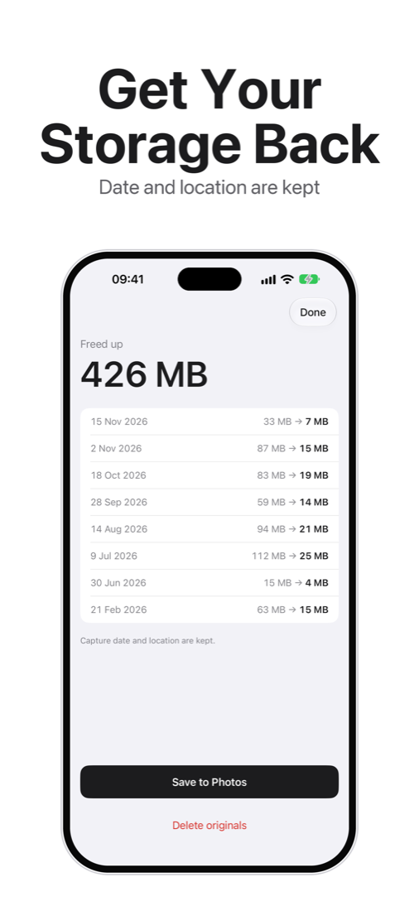

How to make iPhone videos smaller
6 short, sourced answers to what people search: compress a video on iPhone, fit it under the WhatsApp, Discord or email limit, and HEVC vs H.264.
Zipvid: Video Compressor
Zipvid makes videos smaller right on your iPhone: pick videos, see the estimate, compress with HEVC or H.264 and save the smaller copy. Nothing is uploaded. Download on theApp Store

Compress videos
Send & share
- How to compress a video for WhatsApp on iPhoneWhatsApp's direct video limit is about 16 MB. Here is how to get under it.
- How to compress a video for Discord on iPhoneThe Discord limit depends on your plan. Compress to about 10 MB and it works almost everywhere.
- How to send a large video by email from iPhoneMost email services cap attachments near 25 MB. Here are the ways around it.